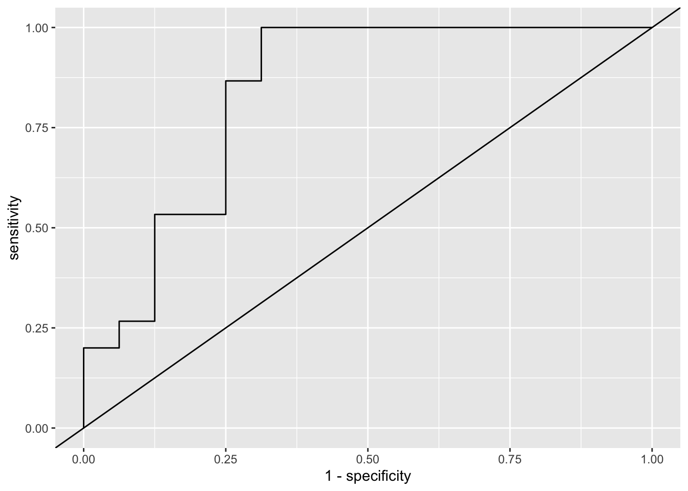

# load packages
library(tidyverse)
library(tidymodels)
library(modelr)
library(rsample)
library(yardstick)
# read data
url <- 'https://raw.githubusercontent.com/pstat197/pstat197a/main/materials/labs/lab4-logistic/data/biomarker_clean.csv'
s_star <- c("DERM", "RELT", "IgD", "PTN", "FSTL1")
biomarker <- read_csv(url) %>%
# subset to proteins of interest and group
select(group, any_of(s_star)) %>%
# convert group (chr) to binary (lgl)
mutate(class = (group == 'ASD')) %>%
select(-group)Measuring classification accuracy
In class you saw how to fit a logistic regression model using glm() and some basic classification accuracy measures.
Objectives
In this lab you’ll carry out a more rigorous quantification of predictive accuracy by data partitioning. You’ll learn to use:
functions from the
rsamplepackage to partition data and retrieve partitionsfunctions from the
modelrpackage to compute predictionsfunctions from the
yardstickpackage for classification metrics
Prerequisites
Follow the action item below to get set up for the lab. You may need to install one or more packages if the library() calls return an error.
ImportantAction
Setup
- Create a new script for this lab in your labs directory.
- Copy-paste the code chunk below at the top of your script to load required packages and data.
Data partitioning
In class we fit a logistic regression model to the data and evaluated classification accuracy on the very same data.
Because the parameter estimates optimize errors on the data used to fit the model, evaluating accuracy on the same data gives an overly optimistic assessment, because the errors have been made as small as possible.
Data partitioning consists in setting aside a random subset of observations that will be used only to assess predictive accuracy and not to fit any models. The held out data is treated as a ‘test’ set of observations to try to predict. This provides a more realistic assessment of predictive accuracy that is closer to what can be expected if genuinely new data is collected.
Partitioning is easy to do using rsample::initial_split and specifying the proportion of data that should be retained for model fitting (the ‘training’ set).
Partitions are computed at random, so for reproducibility it is necessary to set the RNG seed at a fixed value.
ImportantAction
Partition the biomarker data into training and test sets
Copy-paste the code chunk below into your script and execute once.
Remarks:
set.seed()needs to be executed together with the lines that follow to ensure the same result is rendered every timethe output simply summarizes the partitions
# for reproducibility
set.seed(102025)
# partition data
partitions <- biomarker %>%
initial_split(prop = 0.8)
# examine
partitions<Training/Testing/Total>
<123/31/154>To retrieve the data partitions, one needs to use the helper functions training() and testing() :
# training set
training(partitions) %>% head(4)# A tibble: 4 × 6
DERM RELT IgD PTN FSTL1 class
<dbl> <dbl> <dbl> <dbl> <dbl> <lgl>
1 0.717 3 1.06 0.200 0.294 FALSE
2 0.538 1.01 -0.124 0.252 0.968 FALSE
3 0.499 0.545 -1.04 -0.741 0.0158 FALSE
4 0.707 -0.934 1.62 -1.16 -1.19 FALSE# testing set
testing(partitions) %>% head(4)# A tibble: 4 × 6
DERM RELT IgD PTN FSTL1 class
<dbl> <dbl> <dbl> <dbl> <dbl> <lgl>
1 -0.697 -0.921 -1.26 0.0444 -1.46 TRUE
2 -1.14 -0.264 -1.61 -1.92 -1.47 TRUE
3 0.157 0.486 -0.582 -0.336 1.06 TRUE
4 0.0474 0.724 0.169 -1.60 0.690 TRUE Model fitting
Fitting a logistic regression model is, as you saw in class, a one-line affair:
# fit glm
fit <- glm(class ~ .,
data = biomarker,
family = binomial(link = "logit"))The glm() function can fit many kinds of generalized linear models. Logistic regression is just one of this class of models in which:
the response follows a binomial distribution (the Bernoulli distribution is the binomial with \(n = 1\))
the log-odds or logit transformation of the event/class probability \(p_i\) is linear in the predictors
The parameter estimates reported in tabular form are:
tidy(fit)# A tibble: 6 × 5
term estimate std.error statistic p.value
<chr> <dbl> <dbl> <dbl> <dbl>
1 (Intercept) -0.0933 0.199 -0.468 0.640
2 DERM -0.603 0.280 -2.16 0.0311
3 RELT -0.438 0.286 -1.53 0.126
4 IgD -0.662 0.213 -3.11 0.00189
5 PTN -0.234 0.273 -0.857 0.392
6 FSTL1 -0.360 0.259 -1.39 0.165
ImportantAction
Fit the model and interpret a parameter
- Copy-paste the code above in your script and execute to fit the logistic regression model.
- Confer with your neighbor and interpret one of the parameters of your choosing.
By interpret, we mean: what is the estimated change in P(ASD) associated with a +1SD change in log protein level?
Predictions
The modelr package makes it relatively easy to compute predictions for a wide range of model objects in R. Its pipe-friendly add_predictions(.df, .mdl, type) function will add a column of predictions of type type using model .mdl to data frame .df .
# compute predictions on the test set
testing(partitions) %>%
add_predictions(fit)# A tibble: 31 × 7
DERM RELT IgD PTN FSTL1 class pred
<dbl> <dbl> <dbl> <dbl> <dbl> <lgl> <dbl>
1 -0.697 -0.921 -1.26 0.0444 -1.46 TRUE 2.08
2 -1.14 -0.264 -1.61 -1.92 -1.47 TRUE 2.76
3 0.157 0.486 -0.582 -0.336 1.06 TRUE -0.318
4 0.0474 0.724 0.169 -1.60 0.690 TRUE -0.426
5 -0.451 1.57 -0.218 -0.0803 0.641 TRUE -0.577
6 0.740 0.0281 -1.31 0.275 0.174 TRUE 0.188
7 -0.409 0.108 1.82 -0.457 -1.31 TRUE -0.521
8 -0.495 -0.412 0.162 0.383 1.38 TRUE -0.308
9 -0.674 -0.121 -0.0120 -0.102 0.0404 TRUE 0.383
10 -0.344 0.0337 0.998 -2.00 -0.309 TRUE 0.0179
# ℹ 21 more rowsInspect the pred column. Notice that the predictions are not classes or probabilities. The default type of predictions are log-odds. One could back-transform:
# manually transform to probabilities
testing(partitions) %>%
add_predictions(fit) %>%
mutate(probs = 1/(1 + exp(-pred))) %>%
select(class, pred, probs) %>%
head(5)# A tibble: 5 × 3
class pred probs
<lgl> <dbl> <dbl>
1 TRUE 2.08 0.889
2 TRUE 2.76 0.940
3 TRUE -0.318 0.421
4 TRUE -0.426 0.395
5 TRUE -0.577 0.360Or simply change the type of predictions to response in order to obtain predicted probabilities:
# predict on scale of response
testing(partitions) %>%
add_predictions(fit, type = 'response') %>%
select(class, pred) %>%
head(5)# A tibble: 5 × 2
class pred
<lgl> <dbl>
1 TRUE 0.889
2 TRUE 0.940
3 TRUE 0.421
4 TRUE 0.395
5 TRUE 0.360If we want to convert these predicted class probabilities into predicted classes, we can simply define a new variable based on whether the probabilities exceed 0.5 (or any other threshold):
# predict classes
testing(partitions) %>%
add_predictions(fit, type = 'response') %>%
mutate(pred.class = (pred > 0.5)) %>%
select(class, pred, pred.class) %>%
head(5)# A tibble: 5 × 3
class pred pred.class
<lgl> <dbl> <lgl>
1 TRUE 0.889 TRUE
2 TRUE 0.940 TRUE
3 TRUE 0.421 FALSE
4 TRUE 0.395 FALSE
5 TRUE 0.360 FALSE Accuracy measures
The classification accuracy measures we discussed in class are based on tabulating observation counts when grouping by predicted and observed classes.
This tabulation can be done in a base-R way by piping a data frame of the predicted and observed classes into table() :
# tabulate
testing(partitions) %>%
add_predictions(fit, type = 'response') %>%
mutate(pred.class = (pred > 0.5)) %>%
select(class, pred.class) %>%
table() pred.class
class FALSE TRUE
FALSE 12 4
TRUE 6 9However, the metrics discussed in class are somewhat painful to compute from the output above. Luckily, yardstick makes that process easier: the package has specialized functions that compute each metric. One need only:
provide the predicted and true labels as factors
indicate which factor is the truth and which is the prediction
indicate which factor level is considered a ‘positive’
# store predictions as factors
pred_df <- testing(partitions) %>%
add_predictions(fit, type = 'response') %>%
mutate(pred.class = (pred > 0.5),
group = factor(class, labels = c('TD', 'ASD')),
pred.group = factor(pred.class, labels = c('TD', 'ASD')))
# check order of factor levels
pred_df %>% pull(group) %>% levels()[1] "TD" "ASD"# compute specificity
pred_df %>%
specificity(truth = group,
estimate = pred.group,
event_level = 'second')# A tibble: 1 × 3
.metric .estimator .estimate
<chr> <chr> <dbl>
1 specificity binary 0.75The second level is ASD, which in this context is a positive. We knew since we supplied the labels in defining the factors, and the order of levels will match the order of labels. However, we can also check as above using levels() . Hence, event_level = 'second' .
Sensitivity, accuracy, and other metrics can be computed similarly:
# sensitivity
pred_df %>%
sensitivity(truth = group,
estimate = pred.group,
event_level = 'second')# A tibble: 1 × 3
.metric .estimator .estimate
<chr> <chr> <dbl>
1 sensitivity binary 0.6You can check the package documentation for a complete list of available metrics.
ImportantAction
Compute the accuracy
Find the appropriate function from the package documentation (link immediately above) and use it to compute the accuracy.
Remark: from the table, you know the result should be \(\frac{10 + 12}{10 + 12 + 6 + 3} \approx 0.7097\) .
The package also has a helper function that allows you to define a panel of metrics so that you can compute several simultaneously. If we want a panel of specificity and sensitivity, the following will do the trick:
# define panel (arguments must be yardstick metric function names)
panel_fn <- metric_set(sensitivity, specificity)
# compute
pred_df %>%
panel_fn(truth = group,
estimate = pred.group,
event_level = 'second')# A tibble: 2 × 3
.metric .estimator .estimate
<chr> <chr> <dbl>
1 sensitivity binary 0.6
2 specificity binary 0.75
ImportantAction
Compute a panel of precision, recall, and F1 score
- Find the appropriate yardstick functions and define a metric panel
- Compute on the test data
As a final comment, the table of classifications can be obtained in yardstick using the conf_mat() function. (The cross-classification table of predicted versus actual classes is called a confusion matrix.)
pred_df %>% conf_mat(truth = group, estimate = pred.group) Truth
Prediction TD ASD
TD 12 6
ASD 4 9Checklist
- You partitioned the data into training and test sets
- You fit a logistic regression model using the training set
- You evaluated accuracy on the test set
Extras
If there is extra time, or you’re interested in exploring a bit further on your own, read on.
ROC curves
The yardstick package also supplies functions for computing class probability metrics based on the estimated class probabilities rather than the estimated classes. ROC curves and AUROC are examples.
roc_curve() will find all unique probability thresholds and, for each threshold, calculate sensitivity and specificity:
pred_df %>%
roc_curve(truth = group, pred)# A tibble: 33 × 3
.threshold specificity sensitivity
<dbl> <dbl> <dbl>
1 -Inf 0 1
2 0.0115 0 1
3 0.0590 0 0.938
4 0.0692 0 0.875
5 0.176 0 0.812
6 0.186 0 0.75
7 0.193 0 0.688
8 0.210 0 0.625
9 0.244 0 0.562
10 0.273 0 0.5
# ℹ 23 more rowsThis can be used to plot the ROC curve:
pred_df %>%
roc_curve(truth = group,
pred,
event_level = 'second') %>%
ggplot(aes(y = sensitivity, x = 1 - specificity)) +
geom_path() +
geom_abline(slope = 1, intercept = 0)
In this case the ROC curve is so choppy because the test set only includes 31 observations. In general, for a collection of \(n\) observations there are at most \(n + 1\) unique thresholds and usually considerably fewer.
The area under the ROC curve is also easy to compute:
pred_df %>% roc_auc(truth = group,
pred,
event_level = 'second')# A tibble: 1 × 3
.metric .estimator .estimate
<chr> <chr> <dbl>
1 roc_auc binary 0.838Combined metric types
If you wish to compute both classification metrics based on a class prediction and class probability metrics based on a probability prediction in a metric panel, the classification should be provided as the argument to estimate = ... and class probability column can be provided as an unnamed argument following the estimate argument.
For example:
panel <- metric_set(roc_auc, accuracy)
pred_df %>% panel(truth = group,
estimate = pred.group,
pred,
event_level = 'second')# A tibble: 2 × 3
.metric .estimator .estimate
<chr> <chr> <dbl>
1 accuracy binary 0.677
2 roc_auc binary 0.838Exploring partitions
Review this section if you want a deeper understanding of data partitioning.
The rationale for partitioning is that held out data will give a more honest assessment. Conversely, evaluating accuracy on data used to fit a model will provide an overly optimistic assessment.
We can experimentally confirm this intuition by:
- repeatedly partitioning the data at random
- evaluating accuracy on both partitions
- averaging across partitions
This procedure will reveal that on average the accuracy is better on training data. Don’t worry too much about the computations; focus on the output and the concepts.
We’ll use the tidyverse iteration strategy from lab 3. First we’ll need some helper functions that are basically wrappers around each step we went through in this lab:
- fitting a model
- adding predictions
- evaluating metrics
# define some helper functions
fit_fn <- function(.df){
glm(class ~ ., family = 'binomial', data = .df)
}
pred_fn <- function(.df, .mdl){
.df %>% add_predictions(.mdl, type = 'response')
}
panel <- metric_set(sensitivity, specificity, accuracy, roc_auc)
eval_fn <- function(.df){
.df %>%
mutate(group = factor(class, labels = c('TD', 'ASD')),
pred.group = factor(pred > 0.5, labels = c('TD', 'ASD'))) %>%
panel(truth = group,
estimate = pred.group,
pred,
event_level = 'second')
}Now let’s create 400 random partitions of the data and perform the steps in this lab for every partition. In addition, we’ll compute predictions and evaluate accuracy on the training set, which we did not do above and is generally not done.
set.seed(102025)
n_splits <- 400
out <- tibble(partition = 1:n_splits,
split = map(partition, ~ initial_split(biomarker, prop = 0.8)),
train = map(split, training),
test = map(split, testing),
fit = map(train, fit_fn),
pred_test = map2(test, fit, pred_fn),
pred_train = map2(train, fit, pred_fn),
eval_test = map(pred_test, eval_fn),
eval_train = map(pred_train, eval_fn))
out %>% head(4)# A tibble: 4 × 9
partition split train test fit pred_test pred_train
<int> <list> <list> <list> <list> <list> <list>
1 1 <split [123/31]> <tibble> <tibble> <glm> <tibble> <tibble>
2 2 <split [123/31]> <tibble> <tibble> <glm> <tibble> <tibble>
3 3 <split [123/31]> <tibble> <tibble> <glm> <tibble> <tibble>
4 4 <split [123/31]> <tibble> <tibble> <glm> <tibble> <tibble>
# ℹ 2 more variables: eval_test <list>, eval_train <list>We can extract the accuracy of predictions on each of the training and test sets as follows:
test_accuracy <- out %>%
select(partition, contains('eval')) %>%
unnest(eval_test) %>%
select(partition, .metric, .estimate) %>%
pivot_wider(names_from = .metric, values_from = .estimate)
train_accuracy <- out %>%
select(partition, contains('eval')) %>%
unnest(eval_train) %>%
select(partition, .metric, .estimate) %>%
pivot_wider(names_from = .metric, values_from = .estimate)
test_accuracy %>% head(4)# A tibble: 4 × 5
partition sensitivity specificity accuracy roc_auc
<int> <dbl> <dbl> <dbl> <dbl>
1 1 0.467 0.75 0.613 0.654
2 2 0.867 0.875 0.871 0.904
3 3 0.875 0.565 0.645 0.821
4 4 0.765 0.714 0.742 0.815train_accuracy %>% head(4)# A tibble: 4 × 5
partition sensitivity specificity accuracy roc_auc
<int> <dbl> <dbl> <dbl> <dbl>
1 1 0.787 0.758 0.772 0.858
2 2 0.721 0.710 0.715 0.807
3 3 0.824 0.691 0.764 0.845
4 4 0.729 0.781 0.756 0.830Lastly, we can average the metrics over all partitions and also check the variability across partitions. We’ll start with the training set:
train_summaries <- train_accuracy %>%
rename(roc.auc = roc_auc) %>%
select(-partition) %>%
summarize_all(.funs = list(mean = mean, sd = sd)) %>%
gather() %>%
separate(key, into = c('metric', 'stat'), sep = '_') %>%
spread(stat, value)Now compute the average and variability on the test set:
test_summaries <- test_accuracy %>%
rename(roc.auc = roc_auc) %>%
select(-partition) %>%
summarize_all(.funs = list(mean = mean, sd = sd)) %>%
gather() %>%
separate(key, into = c('metric', 'stat'), sep = '_') %>%
spread(stat, value)Now let’s put them side-by-side:
left_join(train_summaries,
test_summaries,
by = 'metric',
suffix = c('.train', '.test')) %>%
select(metric, contains('mean'), contains('sd')) %>%
knitr::kable()| metric | mean.train | mean.test | sd.train | sd.test |
|---|---|---|---|---|
| accuracy | 0.7555285 | 0.7266935 | 0.0209682 | 0.0704983 |
| roc.auc | 0.8334954 | 0.8055620 | 0.0174477 | 0.0752254 |
| sensitivity | 0.7544909 | 0.7227844 | 0.0323658 | 0.1090741 |
| specificity | 0.7550502 | 0.7354653 | 0.0298098 | 0.1044549 |
Notice that:
- The apparent accuracy according to all metrics is higher on average on the training data across partitionings
- The accuracy metrics on the test data are more variable across partitionings
This behavior is the justification for data partitioning: evaluating predictions on the same data that was used to fit the model overestimates the accuracy compared with data that was not used in fitting.